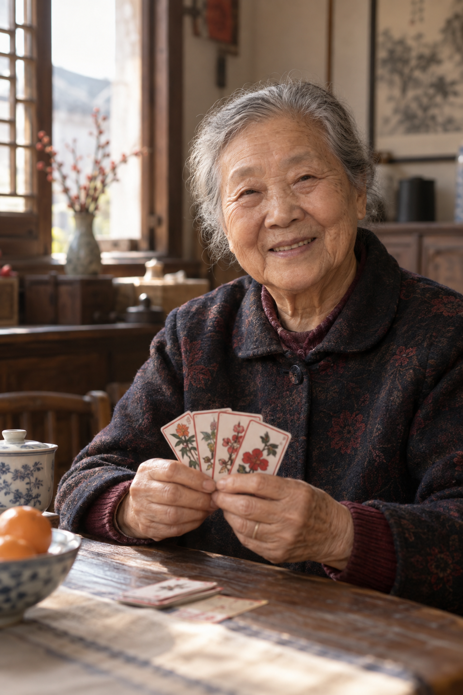
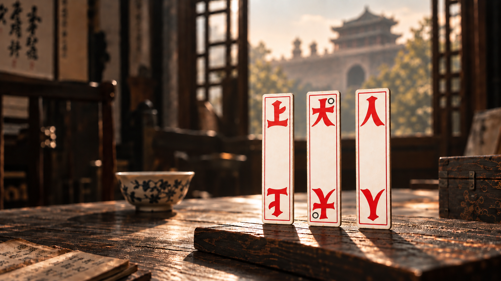
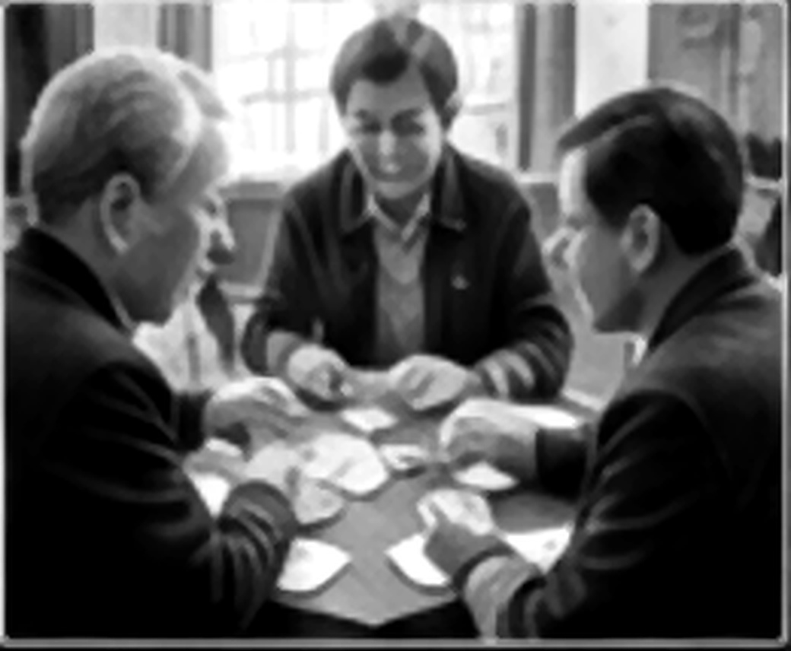
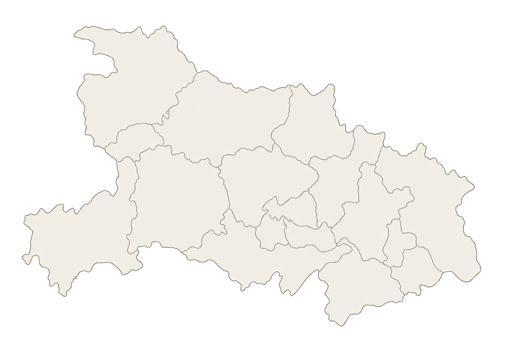

“以前一到过年，屋里几桌都是打花牌的。”
王奶奶 / 荆州 / 76 岁
她记得最清楚的，是年饭之后的那张方桌。长辈把牌摊开，孩子围在旁边认字，看不懂输赢，也能记住“上大人”“孔乙己”的声音。
花牌不只是消遣，它把过年的热闹、家里的灯火和一座城的方言，都留在了牌桌边。

不学礼，
无以立。——《论语》


“以前一到过年，屋里几桌都是打花牌的。”
王奶奶 / 荆州 / 76 岁
她记得最清楚的，是年饭之后的那张方桌。长辈把牌摊开，孩子围在旁边认字，看不懂输赢，也能记住“上大人”“孔乙己”的声音。
花牌不只是消遣，它把过年的热闹、家里的灯火和一座城的方言，都留在了牌桌边。

恩施内容整理中 松滋内容整理中 荆州正在浏览 湖北
同一副牌，
在不同的地方，
有不同的玩法，
也有不同的故事。